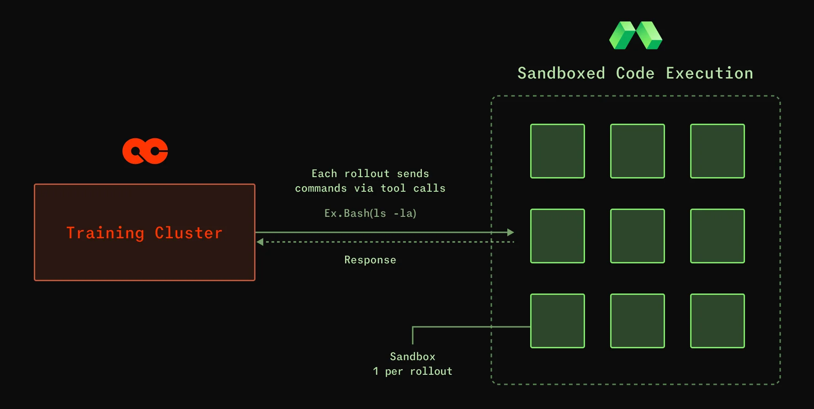

Scaling reinforcement learning at Applied Compute
Applied Compute trains custom AI agents for enterprises like DoorDash, Cognition, and Mercor. The founding team came out of OpenAI's Codex and o1 work, and started the company around a specific thesis: as frontier models commoditize, the competitive layer moves to post-training. Companies that own their reward functions, their evals, and their continual learning loops will pull ahead of companies that don't.
They call this Specific Intelligence, and Modal helps deliver on that mission.
Building Specific Intelligence with specialized fine-tuning
Applied Compute builds agents with Specific Intelligence: AI built for one company, trained on its proprietary data, and improving every time it's used.
AC’s core training mechanism for Specific Intelligence agents is Reinforcement Learning (RL). RL takes a model, has it attempt a task many times in a replayable environment, scores each attempt against a reward function, and updates the weights toward the behavior the reward function favors.
For DoorDash, that meant training a state-of-the-art model for merchant onboarding: ingesting a photographed restaurant menu and producing the structured storefront representation DoorDash uses in production. For Cognition, it meant a custom bug-catching agent designed to surface issues within seconds of a developer saving a commit.
Choosing the right infrastructure underneath
A typical RL training loop has three components that need to interoperate continuously:
- Rollouts: Agents attempt a task inside a replay-able environment
- Evals: Agents are scored for each attempt against a reward function
- Inference: Serves the trained model in production while capturing fresh traces.

Each component has a distinct infrastructure profile. Rollouts are bursty and CPU-heavy. Grading is massively parallel. Inference needs optimized access to GPUs. Modal exposes the right primitives to allow each phase to operate the way it needs to, share state, and keep the loop tight.
Before settling on a platform, Applied Compute evaluated almost every sandbox and execution provider on the market.
It was the only option that supplied the appropriate primitive at each layer of the loop while keeping the boundaries between them low-cost.
Flexibility and fidelity for complex environments
RL training has the model attempt a task thousands of times in parallel, each attempt inside its own clean, ephemeral environment. Those environments are heavy, frequently mimicking entire production systems — Salesforce, Slack, internal APIs — with enough fidelity that the agent cannot distinguish them from the real services it will encounter in production. "The environment you train your agents in should be the environment they go and do their real work," Patil says. Train–test mismatch is among the most consistent failure modes in deployed RL systems.
Modal Sandboxes give the team ephemeral containers with fast startup, full filesystem and network isolation, and snapshot semantics for replay-ability. They give Applied Compute a substrate on which to construct arbitrarily complex mocks of production systems while preserving the determinism the training loop depends on, so engineering effort is spent on environment fidelity rather than on working around platform constraints.
Performance latency: Keeping GPUs fed
Rollouts require running inference and sandboxes simultaneously. When thousands of sandboxes are spun up in parallel during a training run—often doing continuous work over one, two, three hours—P50 and P90 startup latency translate directly into GPU utilization on the inference side. GPU time is the dominant cost in the loop, and any millisecond of sandbox initialization is a millisecond of idle accelerator.
"The more you can make the CPU stuff really, really fast, the better," Patil says. Modal's pre-built, aggressively cached container images and sub-second cold starts keep the training loop GPU-bound rather than CPU-bound, which is the operating regime any serious RL workload requires.
Reliability under load
Every rollout must be graded through unit tests, expert-authored rubrics, or LLM-as-judge runs, and the same grading layer runs again in production, scoring live agent behavior across thousands of concurrent traces. The work requires massively parallel CPU computation. Applied Compute makes use of Modal Functions to provide inexpensive serverless fan-out without requiring a dedicated cluster.
At those concurrencies, individual failures are inevitable; the relevant property is how quickly the platform recovers. Modal's automatic retries, per-invocation isolation, and managed scheduling keep the grading and rollout layers moving.
The future of Specific Intelligence
"Every company is going to start to build their own intelligent stack, just like they did with their software stack."
Patil believes frontier models aren’t going away, but we’ll increasingly see companies own the post-training, the continual learning loops, the evals, and the proprietary data pipelines that make their AI specifically theirs. Applied Compute is building the team and platform to make that practical, one customer at a time, embedding researchers with each customer, encoding their institutional judgment into reward functions, and running the loop until the resulting model behaves like a member of the organization rather than just another tool.
Modal is the cloud substrate giving AC the infrastructure to move quickly towards that vision. Fast enough to keep thousands of parallel rollouts GPU-bound. Flexible enough to host arbitrarily complex mocks of production systems. Resilient enough to keep the grading layer alive across long, concurrent runs. All in a unified environment across the entire RL loop.